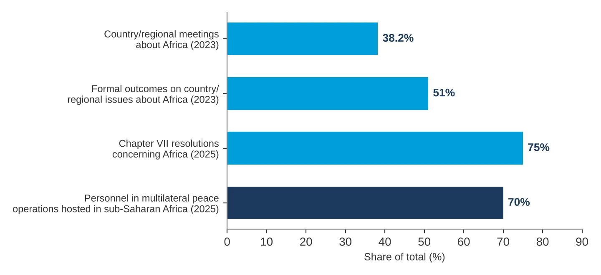
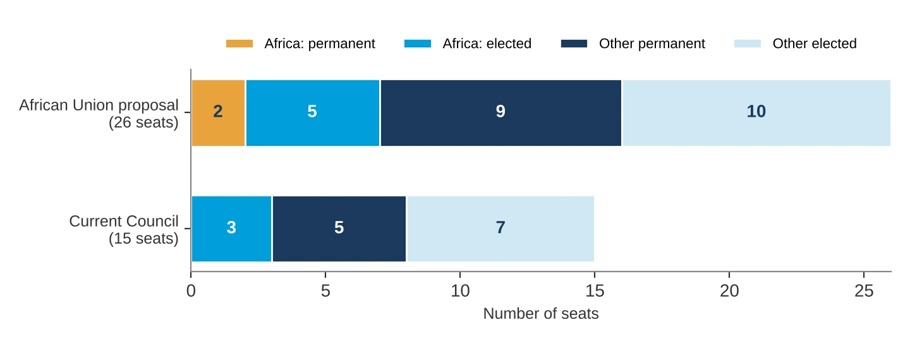

- Representation Deficit: Africa has 54 UN Member States (28.0%) and about 1.52 billion people (18.6%), yet holds zero permanent Security Council seats and only three of the Council's 15 total seats.
- Dominant Council Workload: African files dominate the Council's work—accounting for 51.0% of its 2023 formal outcomes on country or regional issues, 18 of 24 (75%) Chapter VII resolutions in 2025, and 70% (55,229) of all personnel deployed in multilateral peace operations in 2025.
- Stalled Negotiations vs. New Mandate: Intergovernmental negotiations (IGN) have run since 2008 without a single negotiating text. The 2024 Pact for the Future (Action 39(a)) commits Member States to redress the historical injustice against Africa as a priority.
- Core Recommendation: Launch a time-bound, text-based negotiation anchored on two permanent African seats with equal status and five elected seats (within a 26-member Council), paired with bridging safeguards on the veto.
1. The problem: a 1945 Council for a 2026 world
The Security Council carries the Charter's primary responsibility for international peace and security, yet its structure is a product of the post-war settlement. It has been enlarged only once, from 11 to 15 members, in 1965. Five permanent members (China, France, Russia, the United Kingdom and the United States) hold the veto; ten members are elected for two-year terms, of which Africa holds three. No African State has ever held a permanent seat.

The imbalance is large. Africa accounts for 54 of the 193 UN Member States (28.0%) and, in 2024, 1.52 billion of 8.16 billion people (18.6%). The UN Economic Commission for Africa projects the continent's share of world population will reach 28% by 2050. Africa holds 20% of all Council seats and none of the permanent ones (Figure 1).

2. Why it matters: Africa is the Council's main business
Africa's absence from the permanent category would matter less if the Council seldom addressed the continent. The opposite is true. In 2023, 78 of 204 country- or region-specific meetings (38.2%) concerned Africa, and 22 resolutions and three presidential statements—51.0% of 49 formal outcomes—dealt with African matters. In 2025 the Council adopted 44 resolutions, 24 under Chapter VII (sanctions or authorisation of force); 18 of those 24 (75%) concerned Africa. Over the previous decade, Oxfam estimates roughly 80% of resolutions addressed African conflicts, although that advocacy estimate rests on a sample of protracted conflicts and should be read as indicative.
The operational footprint is equally heavy. Sub-Saharan Africa hosted 70% (55,229) of all personnel deployed in multilateral peace operations in 2025, and African States are among the leading troop and police contributors. African States therefore supply and host the operations the Council mandates, yet decide them from the margins.

Rotating seats do not fill the gap. Two-year terms limit institutional memory, and permanent members act as penholders on most African files, which constrains elected African members from initiating drafts affecting their own region. A permanent seat would give Africa durable influence over mandates, sanctions and the selection of the Secretary-General, in a Council whose legitimacy depends on being seen to represent those it serves.
3. State of play
The African position
Adopted in 2005, the Ezulwini Consensus and Sirte Declaration call for at least two permanent seats with all prerogatives and privileges, including the veto for as long as it exists, and five non-permanent seats, with the African Union selecting the States. Within a Council of 26 (Figure 3), Africa would hold 7 seats (26.9%). The African Model, endorsed by all 55 AU members, has been tabled in the General Assembly negotiations.


The negotiating track
The Assembly began intergovernmental negotiations (IGN) in 2008 and has rolled them over at every session, but members have not agreed a unified text. In the 2024 Pact for the Future, Member States agreed to address the historical injustice against Africa as a priority (Action 39(a)) and mandated the Co-Chairs, currently the Netherlands and Kuwait, to work towards a consolidated model. At the 81st session in September 2026, African leaders again pressed the case.
The obstacles
Competing coalitions (the G4, the AU, the L.69 and Uniting for Consensus, which opposes new permanent seats) have blocked text-based talks. Under Article 108, amendment needs two-thirds of the Assembly and ratification by two-thirds of Members including all five permanent members. In September 2024 the United States backed two permanent African seats but not new vetoes, arguing that extending the veto would deepen deadlock; that position was stated under the previous administration and should be confirmed. The Wilson Center notes that all five permanent members have at some point endorsed African permanent membership, but none has accepted the veto demand. Africa has also not yet chosen which States would fill the seats.
4. Policy options
| Option | What it means | Strengths | Risks |
|---|---|---|---|
| A. Status quo plus | Keep five permanent seats; improve working methods or add elected seats only. | Politically easy; no Charter amendment. | Leaves the historical injustice unaddressed; contradicts the Pact for the Future. |
| B. African Common Position (Baseline) | Two permanent African seats with full prerogatives, five elected seats; Council of 26. | Endorsed by all AU members; corrects a long-standing imbalance. | Requires P5 consent to veto-wielding newcomers; seat allocation unresolved. |
| C. Permanent seats, no veto | Two permanent African seats without veto (US position, September 2024). | Gives continuity and voice; avoids veto proliferation. | Creates two classes of permanent member; rejected by the AU. |
| D. Longer-term seats | Elected seats with extended or renewable terms (Uniting for Consensus approach). | Broad appeal; preserves accountability. | No permanence; does not meet Africa's core demand. |
Option A fails the test set by the Pact. Option D offers breadth but not permanence. Options B and C differ chiefly on the veto, and that difference is the real negotiation. The strongest counter-argument, that more vetoes mean more paralysis, deserves a serious answer rather than dismissal. The Council is already frequently deadlocked, and the General Assembly's veto initiative (resolution 76/262), under which the Assembly must meet within ten working days of any veto, shows that accountability measures can be layered on top of structural reform.
5. Recommendations

1. Set a deadline for text-based negotiations
The General Assembly should instruct the IGN Co-Chairs to table a consolidated, text-based model before the close of the 81st session, treating Africa's representation as the first element to be settled, as the Pact for the Future requires.
2. Adopt Option B as the negotiating baseline
Two permanent African seats with equal status, five elected seats and a Council of 26 should anchor negotiations, since it is the only model backed by a whole continent.
3. Bridge the veto gap with a Charter review clause
If immediate veto equality cannot be agreed, States should consider a Charter-based review clause (for example after 15 years) at which the prerogatives of all permanent members are equalised, alongside voluntary veto restraint in cases of mass atrocities and full use of resolution 76/262. (Author's proposal.)
4. Settle African selection criteria before the vote
The African Union should publish transparent criteria—such as peacekeeping contributions, sub-regional balance and rotation—and a selection procedure, so that seat allocation does not become the reason for delay.
5. Act now on Council working methods and co-penholding
Elected African members (A3) should be enabled to co-hold pens on African files, and consultation between the UN Security Council and the AU Peace and Security Council should be institutionalised without waiting for Charter change.
6. Build the Article 108 ratification coalition early
Because Article 108 gives each permanent member a veto over amendment, supporters should engage the five capitals in parallel with the two-thirds General Assembly coalition, linking African seats to other regional claims.
6. Conclusion
The case for an African permanent seat rests on representation, evidence and effectiveness. A continent of 54 States and 1.5 billion people is the subject of most of the Council's binding decisions and host to most peace-operation personnel, yet it lacks permanent standing. Making the Council more representative strengthens, rather than weakens, its authority. The Pact for the Future has supplied the mandate; what remains is the political will to convert it into text.
References and data sources
- UN General Assembly, Reform of the Security Council: intergovernmental negotiations.
- UN General Assembly, A/59/L.67 (Ezulwini Consensus reflected in draft resolution).
- UN General Assembly, A/RES/76/262, Standing mandate for a General Assembly debate when a veto is cast, 26 April 2022.
- UN Department of Economic and Social Affairs (UN DESA), World Population Prospects 2024, estimated mid-year population by region.
- UN Economic Commission for Africa (UNECA), Africa's population and the demographic window.
- UN Press, General Assembly, 80th session, Security Council reform debate (GA/12731), 18 November 2025.
- Security Council Report, High-level debate on addressing the historical injustice and enhancing Africa's effective representation, 9 August 2024.
- SIPRI, Developments and trends in multilateral peace operations, 2025, May 2026.
- Al Jazeera, UNGA81: Why has Africa's Security Council reform push remained unresolved?, 26 September 2026.
- Oxfam, Africa subject of 80 per cent of UN Security Council resolutions over last decade.
- Reuters (via ThePrint / Deccan Herald), US supports two permanent UN Security Council seats for Africa, September 2024.
- Wilson Center, Africa and the US non-proposal on UN Security Council reform.
- Institute for Security Studies (ISS), No shortcuts to UNSC reform.
- Government of Sierra Leone, Statement by President Bio to the 6th Summit of the AU C-10 (Pact for the Future, Action 39(a)).
- Amani Africa, Advancing the African position and Kuwait on the current state of the IGN.
- southafrica.info, AU calls for two African UN seats, 7 July 2005.
- PBS NewsHour / AP, African leaders press United Nations for permanent seats on Security Council, 24 September 2026.
- Zee News, Reforming the UN Security Council: Can an expanded BRICS reach a consensus?
- United Nations, Member States.
Notes on data: All figures were checked against the sources above as of 26 November 2026. Percentages in Figures 1 and 2 are the author's calculations from the cited counts. Positions of individual permanent members may have changed since the dates cited and should be verified before circulation.